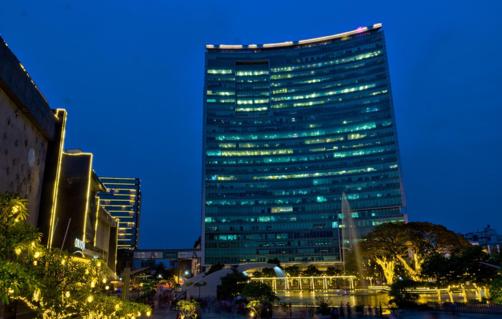
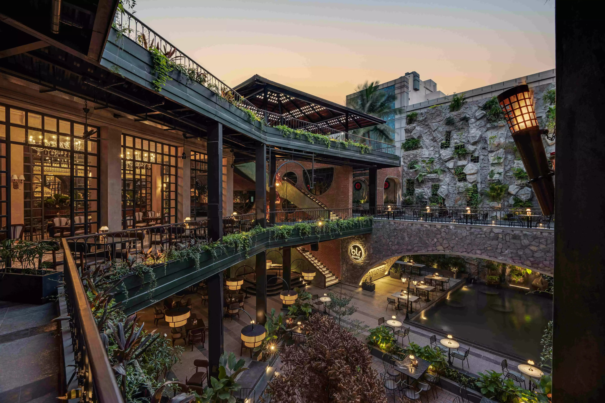

The Weather

Hovering at about 20C all year round, the weather in Bangalore is probably the best among all Tier-1 cities in India and the reason many come to this city. The traffic might make you miserable, but one look up at the sky will make your day again.
The Career Opportunities

The main crowd-puller of Bangalore is the career opportunities, which is why so many people from every corner of the country come to the city despite abominable traffic, sky-high rent and the chaos of its busy, narrow streets.
The Breweries

Even if the first two disappoint and you come off feeling that Bangalore isn't quite what it was cracked up to be, you'd always have plenty of breweries to drink it down at. Toit, BLR Brewring Company and Byg Brewski are some of my personal favourites. You'll probably find me there for company.